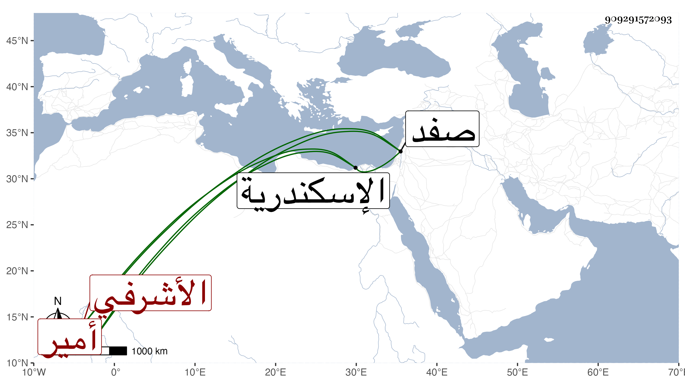

0902Sakhawi.DawLamic.ITO20230111-ara1.EIS1600.909291572093
Biography ID: 909291572093
210
جانبك من أمير الأشرفي برسباي ويعرف بالظريف . كان من صغار خاصكية أستاذه ثم عمله الظاهر خازندارا صغيرا ثم دوادارا صغيرا ثم أمره عشرة ثم صيره من رءوس النوب فلما تسلطن اينال كان من حزبه ولم يراع للظاهر حقه في ولده فعمله طبلخاناه وخازندارا وعظم ونالته السعادة رساق المحمل وتزوج بابنة الظاهر واستولدها ، وقدمه الظاهر خشقدم بل وعمله دوادارا ثانيا فخف وطاش وتعاظم وتفاقم فقبض عليه وحبسه باسكندرية ثم أخرجه إلى البلاد الشامية فحبسه بقلعة صفد حتى مات فيها سنة سبعين وهو في عشر الخمسين ، وكان مليح الشكل حلو الوجه عارفا بأنواع الفروسية ونحوها مع مزيد بخل وجبروت وخلفه على زوجته الأمير أزبك من ططخ الظاهري .
